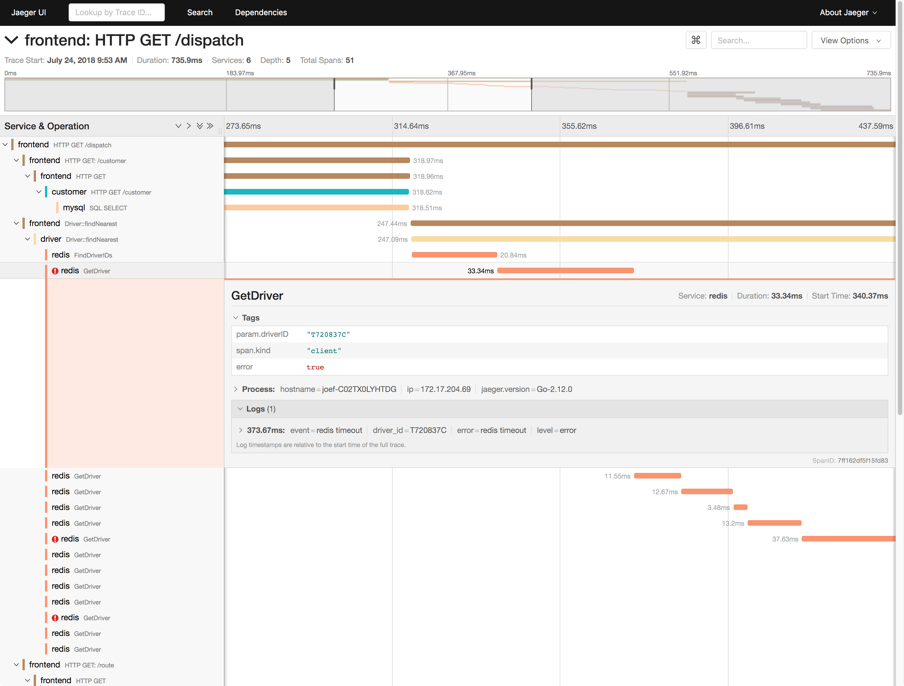
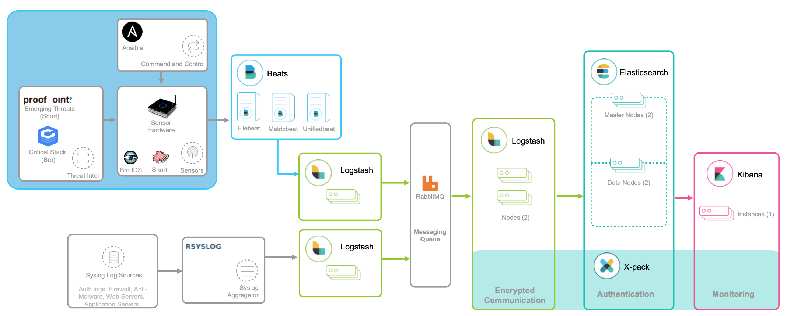
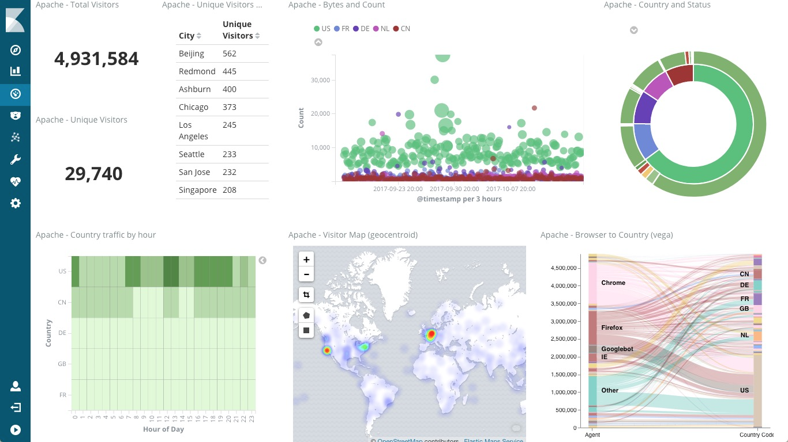

指标监控
应用程序的核心指标，不再是资源的使用情况，而是请求数、错误率和响应时间。
第一个，是应用进程的资源使用情况，比如进程占用的 CPU、内存、磁盘 I/O、网络等。使用过多的系统资源，导致应用程序响应缓慢或者错误数升高，是一个最常见的性能问题。
第二个，是应用程序之间调用情况，比如调用频率、错误数、延时等。由于应用程序并不是孤立的，如果其依赖的其他应用出现了性能问题，应用自身性能也会受到影响。
第三个，是应用程序内部核心逻辑的运行情况，比如关键环节的耗时以及执行过程中的错误等。由于这是应用程序内部的状态，从外部通常无法直接获取到详细的性能数据。所以，应用程序在设计和开发时，就应该把这些指标提供出来，以便监控系统可以了解其内部运行状态。
- 有了应用程序之间的调用指标，你可以迅速分析出一个请求处理的调用链中，到底哪个组件才是导致性能问题的罪魁祸首；
- 而有了应用程序内部核心逻辑的运行性能，你就可以更进一步，直接进入应用程序的内部，定位到底是哪个处理环节的函数导致了性能问题。
基于这些思路，我相信你就可以构建出，描述应用程序运行状态的性能指标。再将这些指标纳入我们上一期提到的监控系统（比如 Prometheus + Grafana）中，就可以跟系统监控一样，一方面通过告警系统，把问题及时汇报给相关团队处理；另一方面，通过直观的图形界面，动态展示应用程序的整体性能。
除此之外，由于业务系统通常会涉及到一连串的多个服务，形成一个复杂的分布式调用链。为了迅速定位这类跨应用的性能瓶颈，你还可以使用 Zipkin、Jaeger、Pinpoint 等各类开源工具，来构建全链路跟踪系统。
比如，下图就是一个 Jaeger 调用链跟踪的示例。

日志监控
- 指标是特定时间段的数值型测量数据，通常以时间序列的方式处理，适合于实时监控。
- 而日志则完全不同，日志都是某个时间点的字符串消息，通常需要对搜索引擎进行索引后，才能进行查询和汇总分析。
对日志监控来说，最经典的方法，就是使用 ELK 技术栈，即使用 Elasticsearch、Logstash 和 Kibana 这三个组件的组合。

这其中，
- Logstash 负责对从各个日志源采集日志，然后进行预处理，最后再把初步处理过的日志，发送给 Elasticsearch 进行索引。
- Elasticsearch 负责对日志进行索引，并提供了一个完整的全文搜索引擎，这样就可以方便你从日志中检索需要的数据。
- Kibana 则负责对日志进行可视化分析，包括日志搜索、处理以及绚丽的仪表板展示等。
下面这张图，就是一个 Kibana 仪表板的示例，它直观展示了 Apache 的访问概况。

值得注意的是，ELK 技术栈中的 Logstash 资源消耗比较大。所以，在资源紧张的环境中，我们往往使用资源消耗更低的 Fluentd，来替代 Logstash（也就是所谓的 EFK 技术栈）。
小结
梳理了应用程序监控的基本思路。应用程序的监控，可以分为指标监控和日志监控两大部分：
- 指标监控主要是对一定时间段内性能指标进行测量，然后再通过时间序列的方式，进行处理、存储和告警。
- 日志监控则可以提供更详细的上下文信息，通常通过 ELK 技术栈来进行收集、索引和图形化展示。